See how your code holds together.
Atlas draws your code as a small piece of mathematics: objects, functions, and the topology of how they are connected. You and your coding agent look at the same picture, which makes it easier to collaborate.
The same figure from two very different programs.
Imagine a program that smooths sunspot data. It fetches the monthly sunspot counts since 1749 from the web, keeps them as a CSV, takes the mean over 13 months and draws both. This is what it makes.
Two programs make exactly this figure: one a sloppy script, one typed and elegant. The output cannot tell them apart. How do you see which one is slop?
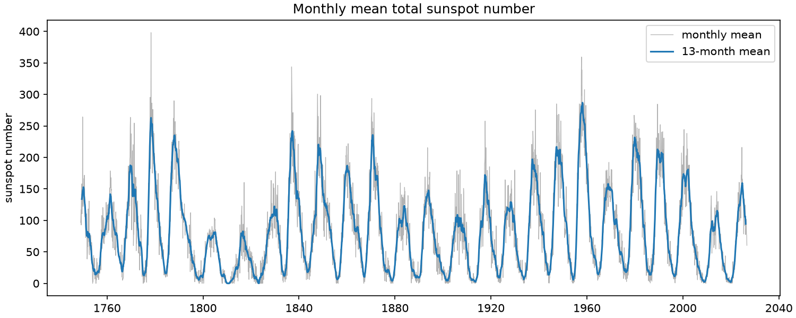
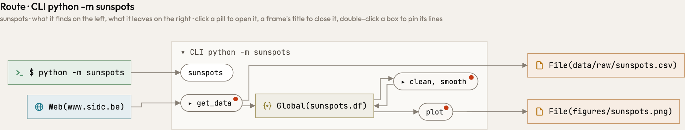
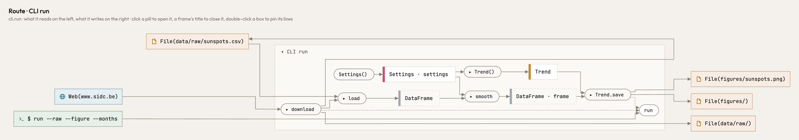
Atlas shows you. Both reach the same places: the web, the raw CSV, the figure. Inside they part. In the sloppy script every step reads and changes one global, Global(sunspots.df), and nothing is handed from step to step. In the typed one the CSV stands between download and load, a DataFrame goes from step to step, and the command names every file. A red dot is a question Atlas asks the author. Open the typed one in Atlas and click around: it is a live picture.
Port it, and see whether the design survived.
Code gets rewritten in another language, more and more often by an agent. Tests tell you the port makes the same figure; they do not tell you the design survived. Atlas reads Python, Rust and TypeScript into the same picture, so a step gone or a place moved shows.
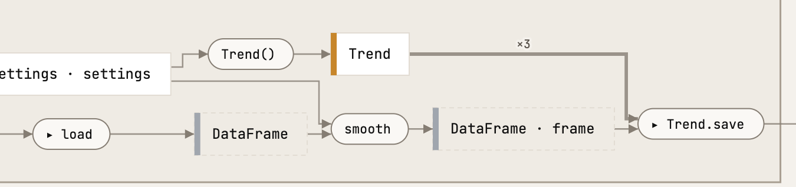
Python, typed. load gives a pandas DataFrame; smooth takes it and gives it back with a smoothed column, and Trend.save draws that one frame with matplotlib. Open the whole live picture and click around →
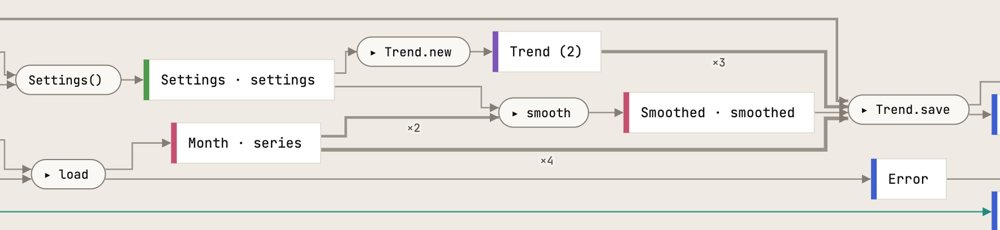
Rust, ported. The same step: smooth between load and Trend.save. What it is handed differs with the libraries: Rust has no DataFrame, so load gives a list of Month records, smooth gives Smoothed means beside them, and Trend.save is handed both. Open the whole live picture and click around →
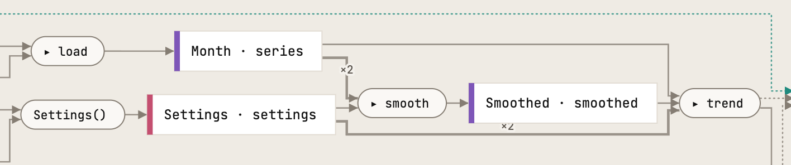
TypeScript, ported. The same shape as Rust: Month records from load, Smoothed means from smooth, both handed to trend, which draws an SVG. Open the whole live picture and click around →
Say exactly what you mean: point at it.
Your agent lives in text. Humans process images much faster. Connecting your agent with Atlas gives it a way to highlight elements in the schema and to read and write notes directly in the schema.
Connect Atlas to your agent once
Claude Code
claude mcp add --scope user atlas -- atlas mcp
Codex
codex mcp add atlas -- atlas mcp
Then run atlas serve in a repository and open the page it prints. What follows is one real session with Claude Code on the sunspots program: what was said in the chat, and what the page showed.
1 · You ask where something happens; the agent points at it
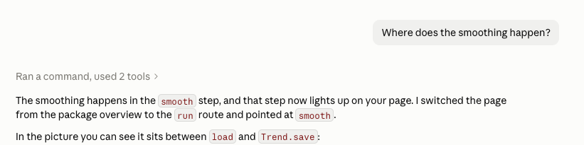
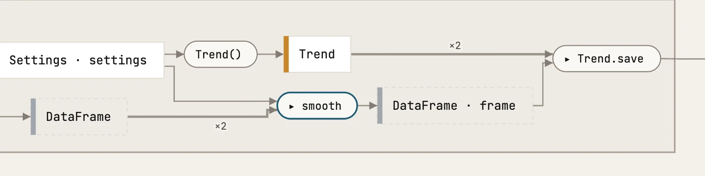
2 · You write a note on a box
Alt-click a box, type, press enter. The note stays on the box, with the view and the commit it was written at. One more note went on load: what happens if the data on the web changes?
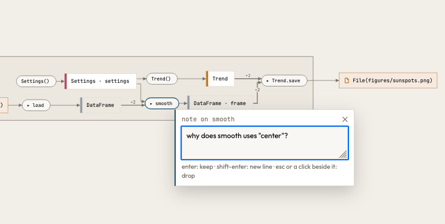
3 · The agent reads your notes and answers on the box
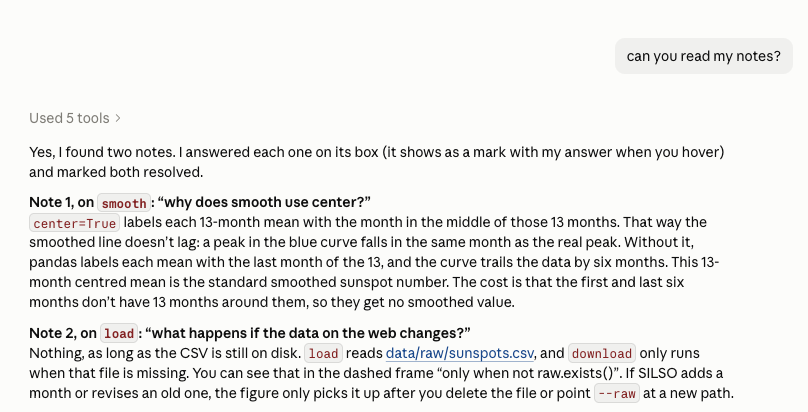
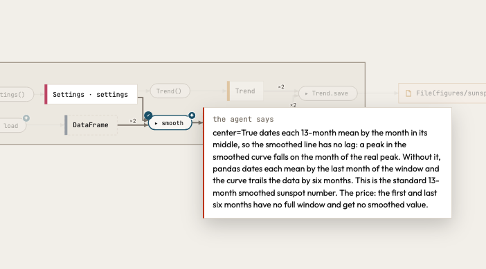
Design the next feature before you write it.
Ask your agent for a change and it shows you the change, not a description of it: a vision, a sketch drawn beside the code as it is, where only what the code would add is green. When you say yes, the sketch goes into your code as a prophecy, dotted purple: the same shape, now real code that Atlas reads with real types, and a list of what is left to build. Write the bodies, remove the marker, and the dots become solid.
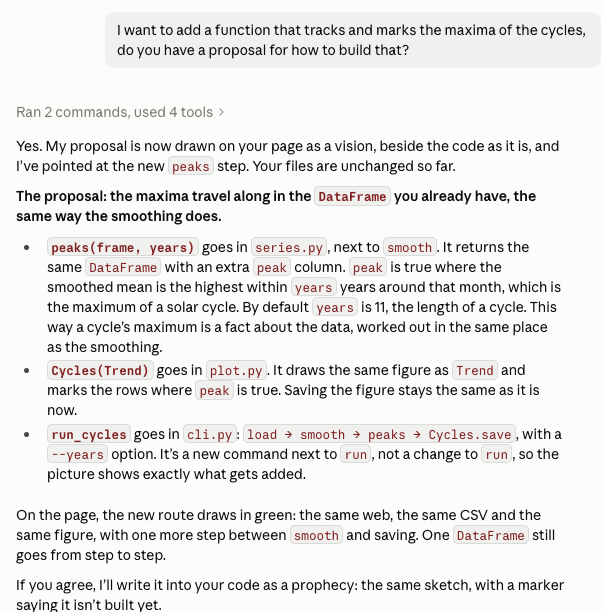
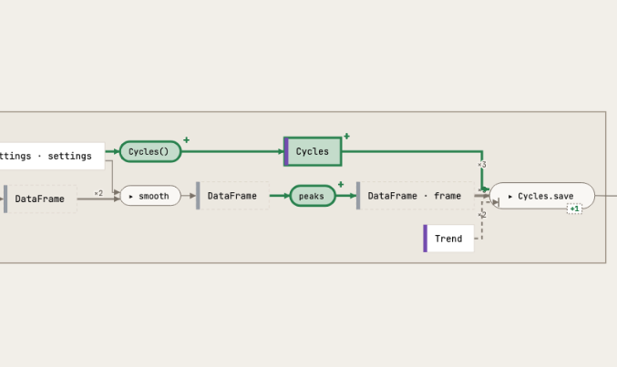
You ask for a change; the agent shows it. A sketch drawn beside the code as it is, with what it adds in green. Nothing is written in your files: the chat can say a lot, the picture shows it at a glance.
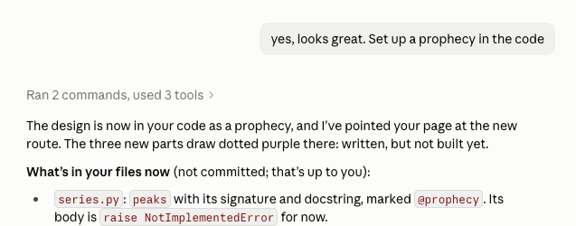
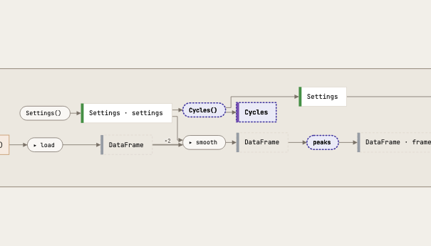
You say yes; it goes into your code. The same sketch, now real code that Atlas reads with real types, marked as not built yet and drawn dotted purple: the shape of the vision, kept in your files until it is built.
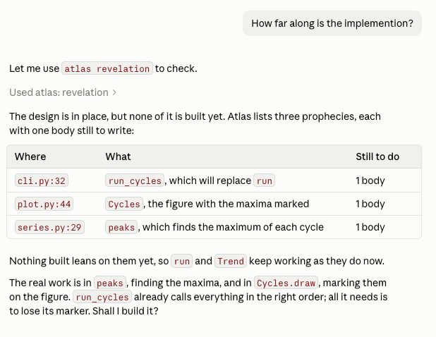
# series.py @prophecy() def peaks(frame: pd.DataFrame, years: int) -> pd.DataFrame: """`frame` with a `peak` column: true where the smoothed mean is the highest within `years` years around it, the maximum of a solar cycle.""" raise NotImplementedError # plot.py @prophecy() class Cycles(Trend): """The trend, with the maximum of each solar cycle marked.""" def draw(self, frame: pd.DataFrame) -> Figure: figure = super().draw(frame) ... return figure # cli.py @app.command() @prophecy(supersedes="sunspots.cli.run") def run_cycles(raw: Path = RAW, figure: Path = FIGURE, months: int = 13, years: int = 11) -> None: """Like `run`, and mark the maximum of each solar cycle on the trend.""" settings = Settings(months=months) if not raw.exists(): download(SILSO, raw) frame = peaks(smooth(load(raw), settings.months), years) Cycles(settings).save(frame, figure)
You ask how far along it is. Each new part carries a marker, @prophecy, and atlas revelation lists them: what each replaces, and how many bodies are left to write. The design is done when the list is empty.
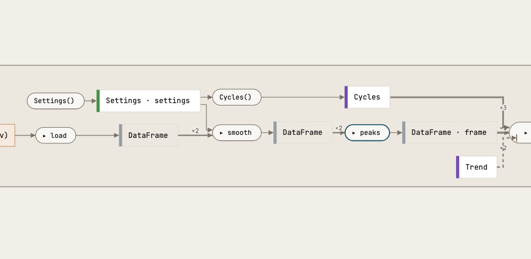
# series.py
def peaks(frame: pd.DataFrame, years: int) -> pd.DataFrame:
"""`frame` with a `peak` column: true where the smoothed mean is the highest
within `years` years around it, the maximum of a solar cycle."""
highest = frame["smoothed"].rolling(12 * years, center=True, min_periods=1).max()
return frame.assign(peak=frame["smoothed"] == highest)
# plot.py
class Cycles(Trend):
"""The trend, with the maximum of each solar cycle marked."""
def draw(self, frame: pd.DataFrame) -> Figure:
figure = super().draw(frame)
ax = figure.axes[0]
maxima = frame[frame["peak"]]
ax.scatter(maxima.index, maxima["smoothed"], color="C3", zorder=3, label="cycle maximum")
ax.legend()
return figure
# cli.py
@app.command()
def run_cycles(raw: Path = RAW, figure: Path = FIGURE, months: int = 13, years: int = 11) -> None:
"""Like `run`, and mark the maximum of each solar cycle on the trend."""
settings = Settings(months=months)
if not raw.exists():
download(SILSO, raw)
frame = peaks(smooth(load(raw), settings.months), years)
Cycles(settings).save(frame, figure)Built. The agent writes the bodies and takes the markers away. atlas revelation finds no prophecies any more, and the dotted boxes are solid: the same route, built.
See what a change did, without reading the diff.
A pipeline grows one commit at a time: the download, the load, the first figure, the smoothing, a filter, and last the maxima of the solar cycles. Pick any two commits and Atlas draws them as one picture. Here the fifth against the sixth: the new path from the smoothed months to a second figure is filled green, and nothing else moved.
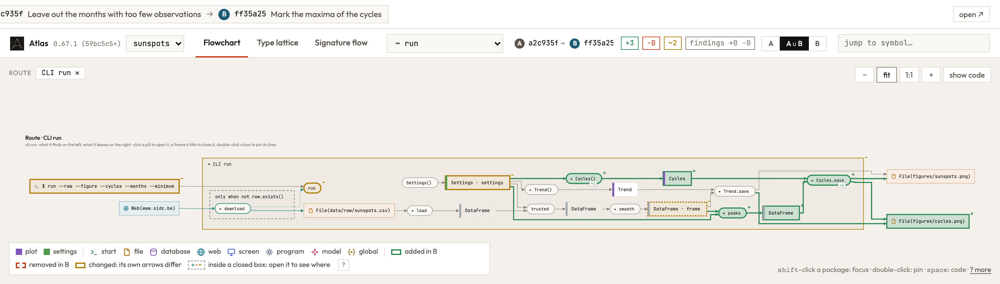
added removed changed: its own arrows differ
Your README draws itself.
Every push redraws the picture of your code in your README. It runs on GitHub, so there is nothing to install on your laptop. How to set it up →
About
The monthly mean sunspot number, smoothed and drawn.
- Readme
- 58 stars
Deployments
- github-pages 2 hours ago
Languages
- Python 100.0%
Why it holds together: the mathematics of your code.
Mathematics is a language that allows you to make things consistent. Best practices in coding are consistent, so it makes sense to view your computer code through a mathematical perspective. Because we can turn the mathematics of the code into a visual, you can literally see the consistency of your code, if you followed best practices. This is independent of the language you use: every program is drawn by the same mathematical rules.
What is inside
Category theory
- A category of types
- Types are objects, functions are arrows, call order is composition. A route is a composite from an entry point to a place.
- Sum types are coproducts
- Taken apart where they arise.
- Lawful lenses
- A class that writes a place and reads it back is a lens on that place. Atlas asks the put-get law at the level of types: what goes in as a
Graphcomes back as aGraph.
Topology
- Zooming out glues, a filter is a fiber
- Zooming out glues each family of types into one point: a quotient. Keeping to one route is the fiber over it, the part that lies above one point. Gluing and taking a fiber don't commute, so the order of a view is meaning.
- Fine and coarse
- A zoom level divides the nodes into boxes, and each such division is a topology on them. Zooming in and out moves between finer and coarser ones, so the picture stays the same picture.
Type theory
- Effects in the type
- A function's domain is its parameters plus what it reads; its codomain is what it returns plus what it writes, sends or runs, as in a type-and-effect system. Files, tables and URLs are objects like any other.
- Subtypes keep their promise
- An override does what its base says (behavioural subtyping, Liskov).
Graph theory
- A step and its reach
- A function's own arrow and everything it reaches are different quantities, never merged.
Every notion, with where it lives in Atlas: the mathematics.
Try it on your own code.
One binary. Your code stays on your machine.
macOS and Linux
curl -fsSL https://raw.githubusercontent.com/raoulg/atlas/main/install.sh | sh
Windows, in PowerShell
irm https://raw.githubusercontent.com/raoulg/atlas/main/install.ps1 | iex
From source, with a Rust toolchain
cargo install --locked --git https://github.com/raoulg/atlas atlas
atlas servethe picture of the repository you are in, to work in with your agentatlas viewthe same picture as one HTML file, to keep or sendatlas checkwhere the code and eleven design principles disagreeatlas changeswhat your edit did to the routesatlas mcpthe picture for your coding agentThe nightly build, from next
ATLAS_CHANNEL=nightly sh -c "$(curl -fsSL https://raw.githubusercontent.com/raoulg/atlas/next/install.sh)"
Your coding agent, once for every project
claude mcp add --scope user atlas -- atlas mcp codex mcp add atlas -- "$(command -v atlas)" mcp
Claude Code's --scope user makes Atlas available in every project. Codex keeps its servers in one configuration for all projects and starts them without your shell's PATH, so it is given the binary's full path, which command -v atlas prints. Then atlas serve in any repository is all it takes: the agent's atlas mcp works on the repository the agent runs in, and shares the page with you.